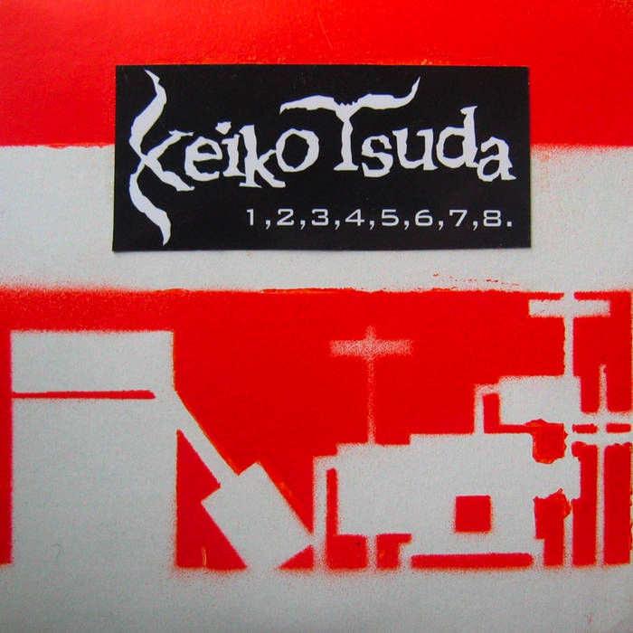

<!DOCTYPE html>

<html lang="en">
  <head>
    <meta charset="utf-8" />
    <title>objet</title>
    <meta name="keywords" content="guitar, looper, keiko tsuda, fnog" />
    <meta name="viewport" content="width=device-width, initial-scale=1.0" />
    <script>
      !(function (t, e) {
        var o, n, p, r;
        e.__SV ||
          ((window.posthog = e),
          (e._i = []),
          (e.init = function (i, s, a) {
            function g(t, e) {
              var o = e.split(".");
              2 == o.length && ((t = t[o[0]]), (e = o[1])),
                (t[e] = function () {
                  t.push([e].concat(Array.prototype.slice.call(arguments, 0)));
                });
            }
            ((p = t.createElement("script")).type = "text/javascript"),
              (p.async = !0),
              (p.src = s.api_host + "/static/array.js"),
              (r = t.getElementsByTagName("script")[0]).parentNode.insertBefore(
                p,
                r
              );
            var u = e;
            for (
              void 0 !== a ? (u = e[a] = []) : (a = "posthog"),
                u.people = u.people || [],
                u.toString = function (t) {
                  var e = "posthog";
                  return (
                    "posthog" !== a && (e += "." + a), t || (e += " (stub)"), e
                  );
                },
                u.people.toString = function () {
                  return u.toString(1) + ".people (stub)";
                },
                o =
                  "capture identify alias people.set people.set_once set_config register register_once unregister opt_out_capturing has_opted_out_capturing opt_in_capturing reset isFeatureEnabled onFeatureFlags getFeatureFlag getFeatureFlagPayload reloadFeatureFlags group updateEarlyAccessFeatureEnrollment getEarlyAccessFeatures getActiveMatchingSurveys getSurveys".split(
                    " "
                  ),
                n = 0;
              n < o.length;
              n++
            )
              g(u, o[n]);
            e._i.push([i, s, a]);
          }),
          (e.__SV = 1));
      })(document, window.posthog || []);
      posthog.init("phc_vqKUfwb05UaNZESJUtnmW25GZgZ7DabNlSXsmSyj0mB", {
        api_host: "https://e.abla.io",
      });
    </script>
    <!--<link href="https://fonts.googleapis.com/css2?family=Roboto+Mono&display=swap" rel="stylesheet"> -->
    <style>
      @font-face {
        font-family: "Roboto Mono";
        font-style: normal;
        font-weight: 400;
        src: local(""),
          url("../include/roboto-mono-v21-latin-regular.woff2") format("woff2"),
          url("../include/roboto-mono-v21-latin-regular.woff") format("woff");
      }
      body {
        background-color: #666;
        max-width: 800px;
        color: #fff;
        line-height: 1.6;
        font-family: "Roboto Mono", monospace;
        font-size: 1em;
        margin: 40px auto;
        padding: 0 10px;
      }
      code {
        font-size: 1.6em;
        color: #fff;
      }
      h1 {
        font-weight: bold;
        font-size: 1.6em;
        margin-top: 2em;
      }
      hr {
        margin-top: 4em;
        border: none;
        background-color: #555;
        color: #555;
        height: 1px;
      }
      a {
        color: #bf4;
      }
      a:hover {
        color: #ccc;
      }
      img {
        margin-top: 4em;
        margin-bottom: 2em;
        max-width: 100%;
      }
      input {
        font-family: inherit;
      }
    </style>
  </head>
  <body>
    <br />
    <br />
  </body>
</html>
<h1>keiko tsuda</h1>
<p>2008 - 2017</p>
<p></p>
<p><em>&quot;Keiko Tsuda were one of the many players in the vibrant collective of French
electronic math, which also includes bands like Geste, Jean Jean, Quadrupede,
and Chevreuil. Perhaps what made albums like Sake Duo Kit stand out from the
others was its eccentric punk aesthetic. The seven tracks on this debut
incorporate looping and improvisation, are punchy, quirky, and have a rascally
manner to them.&quot;</em> - Bandcamp</p>
<div style="position:relative;padding-bottom:10%;height:0;overflow:hidden"><iframe style="border: 0; width: 100%; height: 42px;" src="https://bandcamp.com/EmbeddedPlayer/album=1900555156/size=small/bgcol=333333/linkcol=ffffff/track=1608274435/transparent=true/" seamless><a href="https://keikotsuda.bandcamp.com/album/sake-duo-kit">Sake Duo Kit de Keiko Tsuda</a></iframe></div>
<p><a href="https://keikotsuda.bandcamp.com/">bandcamp</a></p>
<div style="position:relative;padding-bottom:56.25%;height:0;overflow:hidden;"> <iframe style="width:100%;height:100%;position:absolute;left:0px;top:0px;overflow:hidden" frameborder="0" type="text/html" src="https://www.youtube.com/embed/B_wOP-NOats" width="100%" height="100%" allowfullscreen title="Dailymotion Video Player" > </iframe> </div>
<div style="position:relative;padding-bottom:56.25%;height:0;overflow:hidden;"> <iframe style="width:100%;height:100%;position:absolute;left:0px;top:0px;overflow:hidden" frameborder="0" type="text/html" src="https://www.youtube.com/embed/_DOR7Gef2Do" width="100%" height="100%" allowfullscreen title="Dailymotion Video Player" > </iframe> </div>
<div style="position:relative;padding-bottom:56.25%;height:0;overflow:hidden;"> <iframe style="width:100%;height:100%;position:absolute;left:0px;top:0px;overflow:hidden" frameborder="0" type="text/html" src="https://www.dailymotion.com/embed/video/xb3pux" width="100%" height="100%" allowfullscreen title="Dailymotion Video Player" > </iframe> </div>
<hr/>
<p>objet &mdash; updated 07/19/23</p>

</body>
</html>
